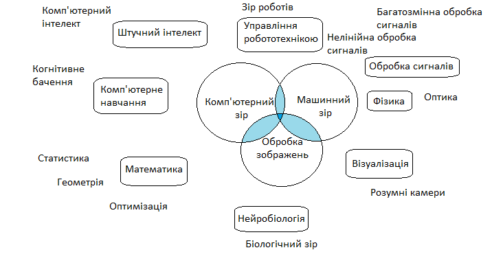

Комп'ютерний зір полягає в формуванні корисних висновків відносно об'єктів і сцен реального світу на основі аналізу зображень отриманих з датчиків.
Інтенсивне вивчення проблем комп'ютерного бачення почалося із кінця 1970-тих, коли комп'ютери змогли керувати обробкою великих наборів даних, таких як зображення. Одначе ці дослідження зазвичай починалися з інших галузей, тому нема стандартного формулювання проблеми комп'ютерного зору. Замість того, існує маса методів для вирішення різноманітних строго визначених задач комп'ютерного зору, де методи часто залежать від задач і рідко коли можуть бути узагальнені для широкого кола застосування.
Комп'ютерний зір, машинний зір та обробка зображень — це тісно пов'язані області, що можна розглядати як розділи більш широкої галузі. При такому тлумаченні комп'ютерний зір зосереджується на обробці тривимірних сцен, спроектованих на одному чи декількох зображеннях; машинний зір зосереджується на застосуванні в основному в промислових системах, для обробки відеоданих з датчиків для управління роботів в реальному часі; обробка зображень в основному зосереджується на роботі із двовимірними зображеннями, наприклад збільшенню контрастності, видаленню шумів чи виконання геометричних перетворень.
Важливу частину в області штучного інтелекту займає автоматичне планування або прийняття рішень в системах, які можуть виконувати механічні дії, такі як пересування робота через деяке середовище. Цей тип обробки зазвичай потребує вхідних даних, що надаються системами комп'ютерного зору, діють як відеосенсор і надають високорівневу інформацію про середовище та роботу.
Інші галузі, які іноді описуються як ті, що належать до штучного інтелекту, і які використовуються відносно комп'ютерного зору, це розпізнавання образів та навчальні методи. В результаті комп'ютерний зір іноді розглядається як частина галузі штучного інтелекту чи галузі комп'ютерних наук загалом.
Фізика є іншою наукою, яка тісно пов'язана з комп'ютерним зором. Значна частина комп'ютерного зору має справу з методами, які потребують досконального розуміння процесу, в якому електромагнітне випромінювання, зазвичай в області видимого або інфрачервоного спектру, відображається поверхнею об'єктів та вимірюється датчиком зображення, щоб отримати відеодані. Цей процес базується на оптиці і фізиці твердого тіла. Складніші датчики зображення також потребують знань з квантової механіки для повного розуміння процесу формування зображення. Також, різноманітні проблеми вимірювань у фізиці можуть бути вирішені, використовуючи комп'ютерний зір (наприклад, ті, що відносяться до руху в рідинах). Тому, комп'ютерний зір може розглядатись як розширення фізики.
Третя галузь науки, яка відіграє важливу роль, — це нейробіологія, зокрема вивчення систем біологічного зору. За останнє століття були проведені великі дослідження очей, нейронів та структур мозку, що відносяться до обробки візуальних подразників як у людини, так і в різноманітних тварин. Це призвело до грубого, і водночас складного, опису того, як працюють «реальні» системи зору, що допомогло вирішити деякі задачі. Результати цих досліджень призвели до створення штучних систем, що імітують роботу і функціонування аналогічних біологічних систем на різних рівнях складності. Також, деякі методи вивчення, що були розроблені в галузі комп'ютерного зору, зобов'язані своєму походженню біології.
Ще однією галуззю, що пов'язана з комп'ютерним зором, є обробка сигналів. Багато методів обробки одномірних сигналів, зазвичай часових сигналів, можуть бути природнім шляхом розширені для обробки двовимірних чи багатовимірних сигналів в комп'ютерному зорі. Однак, через своєрідну природу зображень, існують багато методів, розроблених в галузі комп'ютерного зору, що не мають аналогів в області обробки одновимірних сигналів. Особливістю цих методів є їх нелінійність, що, разом з багатовимірністю сигналу, робить відповідну підобласть в обробці сигналів частиною області комп'ютерного зору.
Крім названих підходів до проблеми комп'ютерного зору, багато з досліджуваних питань можуть бути вивчені з суто математичної точки зору. Наприклад, більшість методів базуються на статистиці, оптимізаційній математиці або геометрії.
Також існує область, названа візуалізацією, яка початково була пов'язана з процесом створення зображень, але іноді мала справу з обробкою та аналізом. Наприклад, рентгенографія працює з аналізом відеоданих медичного призначення.
Кожна з областей застосування комп'ютерного зору пов'язана з низкою задач, можна виділити декілька найбільш типових задач:
- Розпізнавання — це визначення того, чи містять відеодані деякий характерний об'єкт, особливість чи активність.
- Супроводження — задачі, що пов'язані з оцінкою руху, в яких послідовність зображень (відеодані) обробляється для знаходження оцінки швидкості кожної точки зображення чи 3D сцени. Наприклад: визначення тривимірного руху камери, стеження за об'єктом.
- Відновлення сцени — відтворення тривимірної моделі сцени із двох чи більше зображень сцени чи відеоданих. В найпростішому випадку, моделлю може бути набір точок тривимірного простору. Складніші методи відтворюють повну тривимірну модель.
- Відновлення зображення — видалення шумів (шум датчика, розмитість об'єкту, що рухається). Найпростішим підходом до вирішення цієї задачі є різноманітні типи фільтрів, таких як фільтри низьких чи середніх частот. Складніші методи використовують уявлення того, як повинні виглядати ті або інші ділянки зображення, і на основі цього їх перетворення. Більш високий рівень видалення шумі досягається протягом первинного аналізу відеоданих на наявність різноманітних структур, таких як лінії чи межі, а потім управління процесом фільтрації на основі цих даних.